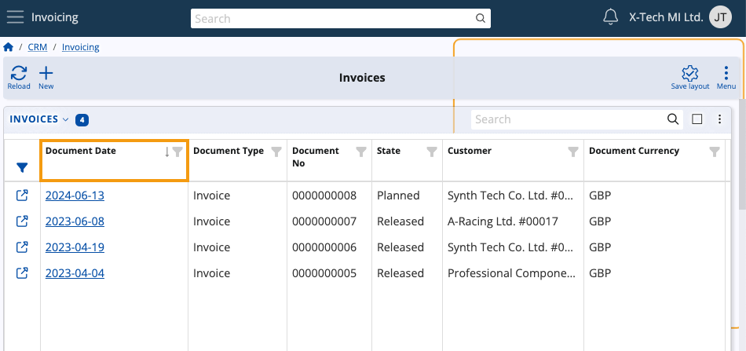
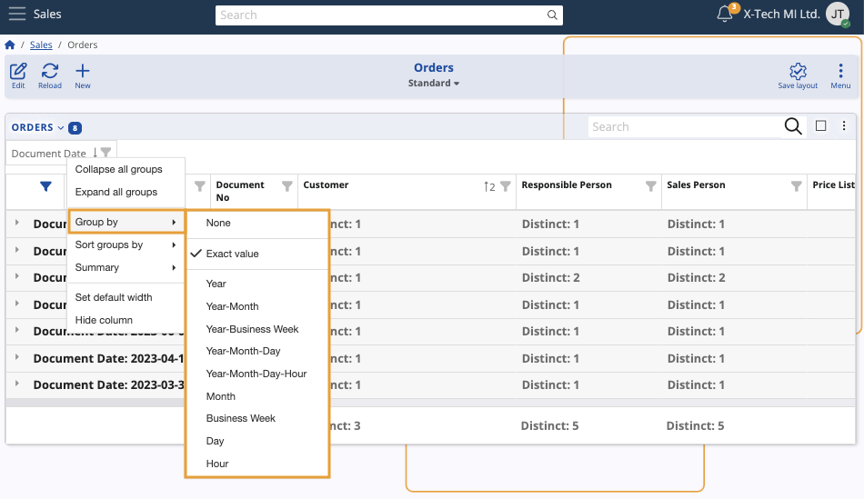

Navigator features
There are several features and behaviors that are common for all ERP.net Web Client navigators.
Default sorting
If you haven't customized the view of a document navigator in any way, or if you have reset your current view's settings to default, they will be sorted by Document Date in a descending order.
This is done for convenience, as it allows you to see the documents which were most recently created first.

Accessing records
In most navigators, you can access a document or a record through the value of its first column, regardless of which column that is.
Values displayed in the rows of that column are accessible through hyperlinks leading exactly to the document they represent.
Note
Certain navigators don't support opening links and therefore don't have this feature enabled.
You can alternatively access the document form of a record:
- By clicking on it, then expanding its Details panel and finally clicking on the Open button
- By clicking on its icon positioned in the System column at the far-left.
Note
The System column always contains a quick-access button for the respective record and its position cannot be modified

Navigator menu
Each navigator features its own dedicated Menu through which you can perform the following:
- Determine the security type of each navigator record by configuring access permissions
- Build and apply advanced filters
- Use ERP.net's dedicated AI Asssistant (upcoming)
- Take advantage of side panels that reveal additional data and attachments for each selected document
- Use functional panels to speed up the process of filling out a document
- Expand detail panels to see information relevant for each selected record of the navigator (e.g. its Document Lines)
- Create tiles to save and later easily access a specific navigator view
- Customize the navigator form by enabling, disabling, reordering and renaming its panels and widgets.
Panel menu
Panels and widgets enabled in a navigator have a separate Menu button accessible at their top-right corners.
It features the ability to:
- Maximize the panel to take up the entire screen
- Reload the panel to reflect the most up-to-date information
- Quickly create a new record of one or more respective types
- Search the contents of the respective panel
- Take advantage of handy advanced features like the Grouping panel and Filter row
- Select multiple records from the panel
- Create a .xlsx file containing all records of the panel
- Limit the row counts of the panel to a specific number
- Customize the panel by enabling, disabling, reordering and renaming its columns.

Multi select
Whenever you select multiple records using the Multi select feature, a new Selected count button will appear on the navigator's ribbon.
It allows you to export the selected records as .xlsx files
Group by column headers
With the help of the Show grouping panel, you can also group a navigator's records based on one or more column headers.
Such groups can be used to organize records by type, state, the month they were created on, etc.
Row context menu
If you right-click on a particular row, you will expand a dropdown menu with one or more of the following options:
- Open the row's associated record
- Apply an advanced filter affecting the entire panel, using this particular row as source (e.g. documment currency)
- Access the form definition of the row (only for fields that can be defined).

Column context menu
If you right-click on a particular column, you will expand a dropdown menu with the following options:
- Sort the column's contents by ascending or descending order
- Clear the sorting, restoring the column view to default
- Group the records of the column by specific criteria like character count, word count, etc.
- Summarize columns using functions like Summary and Distinct
- Restore the column's default width
- Hide the column from view (can be re-enabled through the Panel customization Menu)

Group by intervals
Depending on the type of a column (e.g. Date, Number, Document Type), you can perform more specific grouping operations.
This is achieved through intervals such as character counts and time periods.
Example:
We can apply a rule where records will be grouped by the year indicated in their Document Date column.
As a result, the entire panel will be divided into "year" groups that include records created in the respective year.

Group context menu
If you right-click on a particular column with a group filter applied, you can expand a dropdown menu with the following unique options:
- Sort the respective groups based on the column in ascending or descending order
- Expand and collapse all groups at once
- Change the group interval applied on the column
- Perform Summary functions on all groups
Sort summarized groups
If a Summary function is applied on a column, you can use it to sort existing groups.
Groups can be sorted based on their own column or by columns which have summary functions applied.

Note
The screenshots for this article are from v24 of the Web Client.